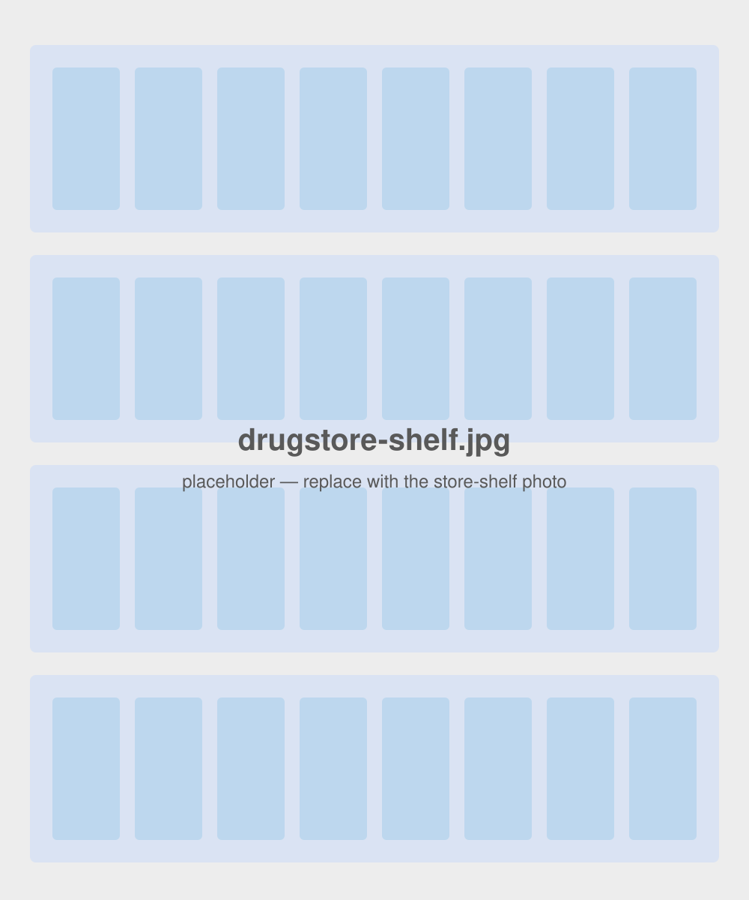
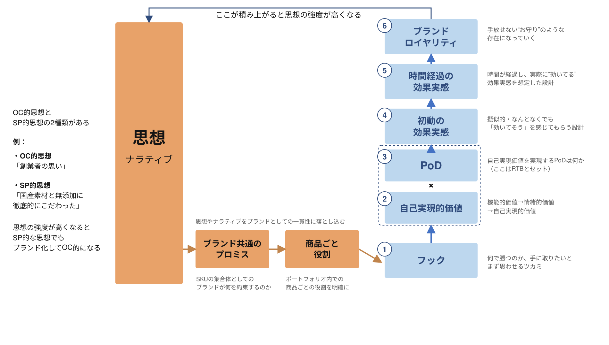

企業の思い込み
- 良い商品を作れば売れる。
- とにかく一度使ってもらえれば、その良さは必ず伝わる。
- だから入口（手に取らせる設計）は後回しでよい。
通販ブランドが「売れ続ける」ための構造理論 ＋ VOC活用案
WHY
「使ってもらえれば良さがわかる」── 多くの企業が抱える前提の落とし穴。
WHY
購買は一連の流れ。入口（①目に留まる・②手に取る）が弱いケースが多い。

商品力（③〜⑦）に自信があっても、①②が弱いと⑤以降に到達しない。
フック＝①②を突破する「ツカミ」。設計対象として独立させる。
WHAT
縦柱＝思想。①フックは商品企画の中で②③・仕様と同時設計され、④→⑤→⑥と積み上がり、⑥が思想を強化してループする。

思想の強度が高くなると、SP的な思想でもブランド化してOC的になる。
WHAT
思想という縦柱を軸に、①フックから⑥ロイヤリティまでが積み上がる。
全層を貫く縦の柱。意外を生む“組み替えの方向”を決める。
要点：「意外」は思想がないと作れない。常識を組み替える方向を決めるのが思想。
手に取りたいとまず思わせるツカミ。商品企画の中で同時設計。
要点：②③・仕様と同時に設計する。後付けにすると何にも接続しない宙吊りコピーになる。
顧客が「信じたい」こと。商品仕様と連携して設計。
要点：「信じたい」を担う柱。次の③（信じられる）と掛け算して初めて約束が成立する。
顧客が「信じられる」根拠。商品仕様と連携して設計。
要点：②×③＝「信じたい×信じられる」。フックはこの核心を一語で予告する。
すぐ「効いてそう」を感じさせる設計＝初回の報酬実感。
要点：「作られているが本物」。誠実性はロイヤリティループが複利で効くための前提条件。
中長期で感じる“効いてる”想定＝継続の報酬実感。
要点：初回と継続、二段の報酬実感を積み上げることでロイヤリティに接続する。
手放せない“お守り”のような存在化。本理論の固有価値。
要点：信者ループと思想の縦柱が、本理論ならではの“堀”。ここを平らにしない。
HOW
②③・仕様を連携設計 → 常識の棚卸し → 7レバーで量産 → 2段ゲートで選抜。
信じさせたいこと×信じられる裏付けを、商品仕様に落とす。
顧客が「今どう信じているか」を書き出す。※旧版に欠けていた前段。
その当たり前にレバーを当て、反フレーム候補を量産する。
第1：逆張り×事実×思想整合／swap test。第2：自分ごと度・口承性・②接続・誠実性。
まず顧客の「当たり前」を言語化し、各レバーを当てる。
AA社のVOC（SNS・レビュー・キャンペーン応募・パネル）を、各層に差し込む。
| 層 | VOCの貢献 | 主なデータ |
|---|---|---|
| 常識の棚卸し【最大】 | SNS・レビュー・応募文を7レバー軸で再分類し、カテゴリ別の常識マップを作る。 | SNS・レビュー・応募テキスト |
| ② 自己実現価値の発見 | 他のことを語る中で漏れる“なりたい自分”を抽出する。 | 応募動機文・UGCの自己描写・継続者の語り |
| チラシ熱量テスト実装 | 自分ごと度・口承性・「熱量」を概念段階で定量化する。 | パネル・SNS反応データ |
| ④⑤ 本物のサインの言語化 | 初動・継続の“効いてる”の語りから設計素材を抜く。 | 購入後レビュー（初動／継続） |
| ⑥ お守り化サインの検知 | 名指し率・比較言語の消滅などループ作動の兆候を追う。 | ソーシャルリスニング（時系列） |
企画フェーズ
カテゴリVOC収集 → 7レバー軸で再分類 → 常識マップ → 思想と掛けて反フレーム量産 → ②③・仕様・フックを同時設計
成果物：カテゴリ別常識マップ／同時設計WS
テスト〜運用フェーズ
フック案をチラシ熱量テストで定量 → 実弾でA/B → 運用後VOCで④⑤の語り・⑥お守り化を検出 → 思想の磨き込み・新フックへループ
成果物：フック評価レポート／思想ループ・ダッシュボード